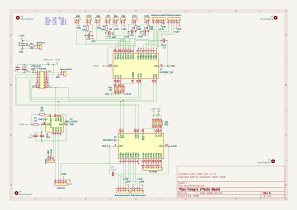
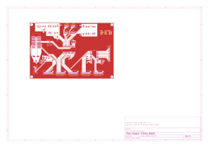
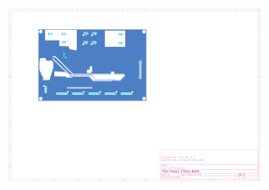

Architecture
RiffPi is a small Python daemon that reads a set of physical controls on the pedalboard and turns them into MIDI Control Change (CC) and Program Change messages sent to Guitarix over a virtual MIDI port.
It's installed as the riffpi command (CLI dispatch in riffpi.cli:main). Running riffpi (or
riffpi run) starts the daemon itself (riffpi.daemon:run); riffpi install-service /
riffpi uninstall-service manage the systemd --user service — see
Installation.
Hardware overview
Everything is wired to the Raspberry Pi over a single I2C bus:
- Two MCP23017 16-bit GPIO expanders (
0x20and0x21) provide the digital I/O for the 4 foot switches + LEDs, the 4 rotary encoders (with their push buttons), the 4x4 matrix keypad, and the joystick's push button. - One ADS1115 4-channel ADC reads the two analog joystick axes and the expression pedal.
- A Pisound sound card provides the audio interface and, via PipeWire, the MIDI bridge to Guitarix running on the same Raspberry Pi 5.
graph LR
subgraph Pi["Raspberry Pi 5"]
I2C["I2C bus"]
MCP1["MCP23017 @0x20<br/>foot switches, encoders A"]
MCP2["MCP23017 @0x21<br/>keypad, encoders B"]
ADS["ADS1115<br/>joystick X/Y, expr. pedal"]
RiffPi["riffpi daemon"]
Guitarix["Guitarix<br/>(gx_head_amp)"]
Pisound["Pisound"]
end
I2C --- MCP1
I2C --- MCP2
I2C --- ADS
MCP1 --> RiffPi
MCP2 --> RiffPi
ADS --> RiffPi
RiffPi -- "MIDI CC (virtual port 'KleagMFX')" --> Guitarix
Guitarix -- "MIDI CC echo" --> RiffPi
Guitarix --- Pisound
MCP23017 pin map
Pin numbers are the Adafruit CircuitPython MCP23017 numbering (A0-A7 = 0-7, B0-B7 = 8-15).
| Control | MCP | Pins |
|---|---|---|
| Power LED | 0x20 |
B3 (11) |
| Foot switch 0 / LED 0 | 0x20 |
button B6 (14), LED B5 (13) |
| Foot switch 1 / LED 1 | 0x20 |
button B7 (15), LED B4 (12) |
| Foot switch 2 / LED 2 | 0x20 |
button A6 (6), LED A4 (4) |
| Foot switch 3 / LED 3 | 0x20 |
button A7 (7), LED A5 (5) |
| Rotary encoder 0 | 0x20 |
clk A0 (0), dt B0 (8), sw B1 (9) |
| Rotary encoder 1 | 0x20 |
clk A3 (3), dt A2 (2), sw A1 (1) |
| Rotary encoder 2 | 0x21 |
clk B7 (15), dt B6 (14), sw B5 (13) |
| Rotary encoder 3 (preset) | 0x21 |
clk B4 (12), dt B3 (11), sw B2 (10) |
| Joystick push button | 0x20 |
B2 (10) |
| Keypad rows | 0x21 |
0-3 |
| Keypad columns | 0x21 |
4-7 |
ADS1115 channel map
| Signal | Channel |
|---|---|
| Joystick X | P0 |
| Joystick Y | P1 |
| Expression pedal | P2 |
Software architecture
riffpi.daemon.run() does all hardware/MIDI setup, then starts one daemon thread per input
device plus a MIDI-input listener thread, and blocks on signal.pause():
midi_input_thread— listens on the same virtual MIDI port for CC echoes coming back from Guitarix (e.g. after a preset change alters effect state) and re-syncs local LED/encoder state.buttons_thread— polls the 4 foot switches (debounced viaMCPButton).joystick.poll_joystick— reads the ADS1115, emits relative mouse motion viauinput.keypad.keypad_thread— scans the 4x4 matrix keypad.expression_pedal.poll— reads the ADS1115, sends smoothed CC24 values.- one
rotary_encoder.poll_threadper encoder — quadrature decoding + CC deltas. main_thread_loop— drainstask_queue(currently only the"reset"action queued by the keypad when switching preset banks).
Foot switch buttons and every encoder's built-in push button route through the same
handle_effect_toggle(idx) callback. The last encoder is special-cased there as the
preset-bank selector (cycles Guitarix banks A-D) instead of toggling an effect; turning that same
encoder (handled separately, in RotaryEncoder.handle_rotation) instead changes preset within
the current bank, wrapping at however many presets that bank actually has — looked up live via
riffpi.guitarix_rpc.GuitarixRPC (Guitarix's JSON-RPC control port, guitarix -p PORT), falling
back to an un-wrapped 0-127 clamp if that port isn't reachable.
i2c_lock (a threading.Lock) guards ADS1115 reads shared between the Joystick and
ExpressionPedal threads, since both poll the same ADS1115 instance concurrently.
Driver modules
| Module | Responsibility |
|---|---|
riffpi.rotary_encoder |
Quadrature decoding (transition lookup table) → relative MIDI CC deltas |
riffpi.guitarix_rpc |
Read-only JSON-RPC client (raw TCP, no HTTP) for Guitarix's -p PORT control port; used to size the preset-encoder wraparound |
riffpi.keypad |
4x4 matrix scan; digit-buffer preset entry; */# as mouse left/right click |
riffpi.joystick |
ADS1115 → dead-zone/power-curve shaped relative mouse motion (see Usage) |
riffpi.expression_pedal |
ADS1115 → median-smoothed MIDI CC24 |
riffpi.mcp_button / riffpi.mcp_led |
Thin per-pin MCP23017 button/LED wrappers |
See Usage for the full MIDI CC mapping and what each control does.
PCB and schematic
Board design source lives in kicad_board/ (KiCad 9). Exported views:


